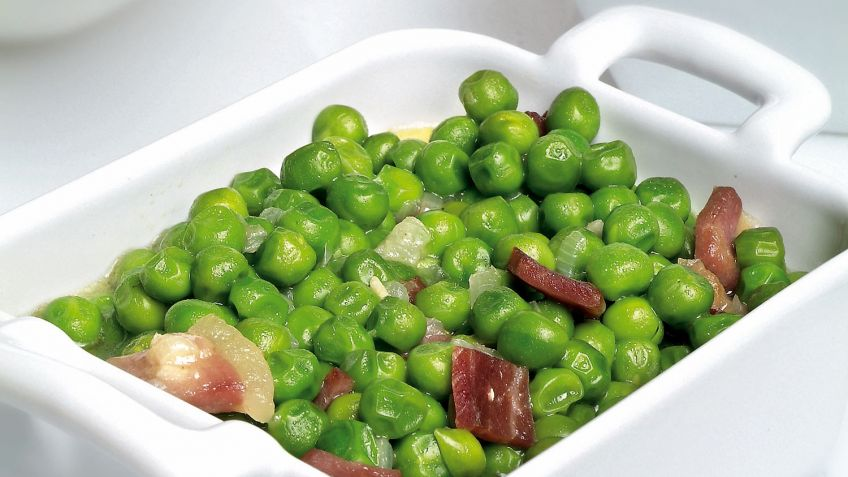

Peas with Ham

Description
Peas are one of the most versatile legumes.
The best known dish is peas with ham. But, you can prepare an infinite number of recipes.
They combine perfectly with fish, meat, in salads, in cream...
The possibilities are endless
Ingredients (for two persons)
- 400g frozen peas
- 1 thick slice of serrano ham (50 g)
- 1 spring onion
- 1 clove garlic
- 1 teaspoon flour
- 3 tablespoons olive oil
- salt
Steps
- Put 1 l of water in a small saucepan, add a pinch of salt and put it to cook. When it starts to boil, add
the peas and cook over medium heat for the time indicated on the package (approximately 6-8 minutes). Drain
them and reserve the broth.
- Peel and dice the spring onion.
- Peel and chop the garlic clove lengthwise, stack and cut into strips, stack again and dice.
- Cut the slice of ham into cubes.
- Put the oil in a saucepan, add the garlic and spring onion (chopped), sauté for a couple of minutes, add the
ham and fry it a little. Add the flour, mix well and add the peas. Pour 1/2 glass of the broth resulting
from cooking the peas and stir. When it starts to boil, cook everything together for 3 minutes to thicken
the sauce and serve.
Back